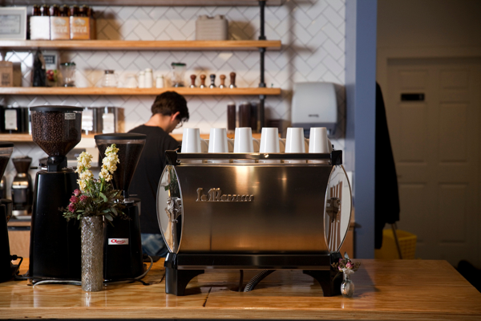

The Top Five Coffee Shops in Nashville
The Well Coffeehouse

The Well Coffeehouse has three locations in Nashville. Their goal is to make a difference in their own community and in communities around the world. They are a small coffee shop that serves a variety of coffees, teas, and food. With their profits, they donate to building wells in communities across the world to give them access to clean water. They have donated enough money to build fifteen wells so far.
The Well Coffeehouse - Official Site
Hours:
Sunday 7AM - 7PM
Monday 6AM - 7PM
Tuesday 6AM - 7PM
Wednesday 6AM - 7PM
Thursday 6AM - 7PM
Friday 6AM - 7PM
Saturday 8AM - 7PM
Location:
4002 Granny White Pk
Nashville, TN 37204
Flatrock Coffee, Tea, and More

Flatrock Coffee, Tea, and More is a cute family coffeeshop designed to be a place for the neighborhood to get together. They use mostly local ingredients and have vegan and vegetarian options. Art from local artists is featured throughout the coffee shop. One of the goals of Flatrock is to create an atmosphere as well as a coffee shop. There are many large tables with outlets, which makes it a great location for work or homework, but there are also couches, which give the coffee shop a warm and cozy feel. Come to Flatrock for great food and a place to relax in community.
Flat Rock Coffee - Official Site
Hours:
Sunday CLOSED
Monday 6:30AM - 5PM
Tuesday 6:30AM - 5PM
Wednesday 6:30AM - 5PM
Thursday 6:30AM - 5PM
Friday 6:30AM - 8PM
Saturday 9AM - 8PM
Location:
2640 Nolensville Pike
Nashville, TN 37204
Three Brothers Coffee

Three Brothers Coffee is located on West End and is a great place to grab a drink and a bite to eat. There are plenty of tables and spaces to do work or grab coffee with friends. They rotate their coffee selection, so be sure to check what’s brewing on their website. Although many college students come here to study, people of all ages can be found meeting for business or getting a quick lunch. Enjoy the local art that can be found all over the walls while you sip on the drink of your choice.
Three Brothers Coffee - Official Site
Hours:
Sunday 8AM - 7PM
Monday 6AM - 7PM
Tuesday 6AM - 7PM
Wednesday 6AM - 7PM
Thursday 6AM - 7PM
Friday 6AM - 7PM
Saturday 8AM - 7PM
Location:
2813 West End Avenue
Nashville, TN 37203
Atmalogy

Atmalogy, which means the study of one's true self, is a unique cafe and meeting space in Nashville. It is composed of different rooms that are uniquely decorated, and many of the rooms are available for reservations if you want to have a meeting or throw a party. Each room has a theme that matches a word, such as grow, create, or connect. One room even has a funny rule - no shoes! Enjoy fresh drinks and a bite to eat in this unique cafe while you work or meet up with friends.
Hours:
Sunday 9AM - 6PM
Monday 7AM - 8PM
Tuesday 7AM - 8PM
Wednesday 7AM - 8PM
Thursday 7AM - 8PM
Friday 7AM - 6PM
Saturday 8AM - 6PM
Location:
2320 West End Ave
Nashville, TN 37203
Dose Coffee
Dose Coffee and Tea offers a full espresso and coffee bar, along with breakfast and lunch menus. They currently have one location located off of West End, but are planning on opening up a new location in Riverside Village. Dose offers everything from coffee, to savory sandwiches, to many different cocktails. All their items are reasonably priced and very delightful.
Hours:
Sunday 7AM - 7PM
Monday 6AM - 7PM
Tuesday 6AM - 7PM
Wednesday 6AM - 7PM
Thursday 6AM - 7PM
Friday 6AM - 7PM
Saturday 7AM - 7PM
Location:
3431 Murphy Rd
Nashville, TN 37203